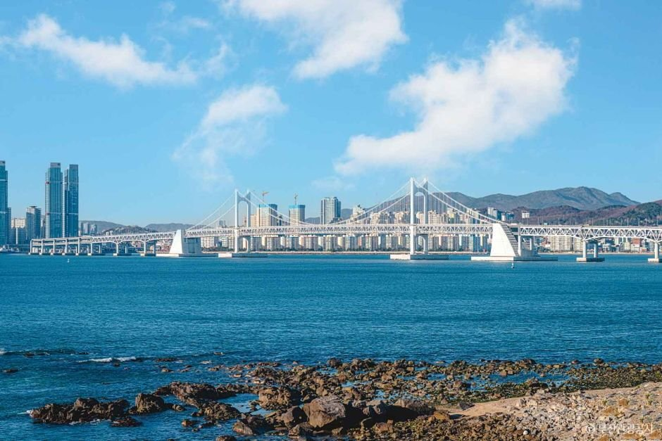
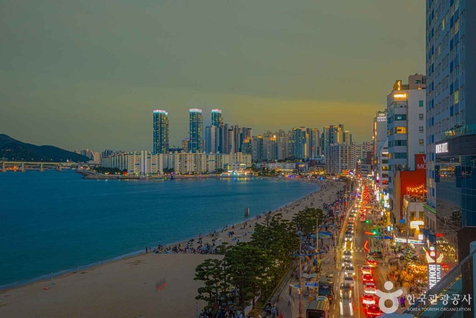
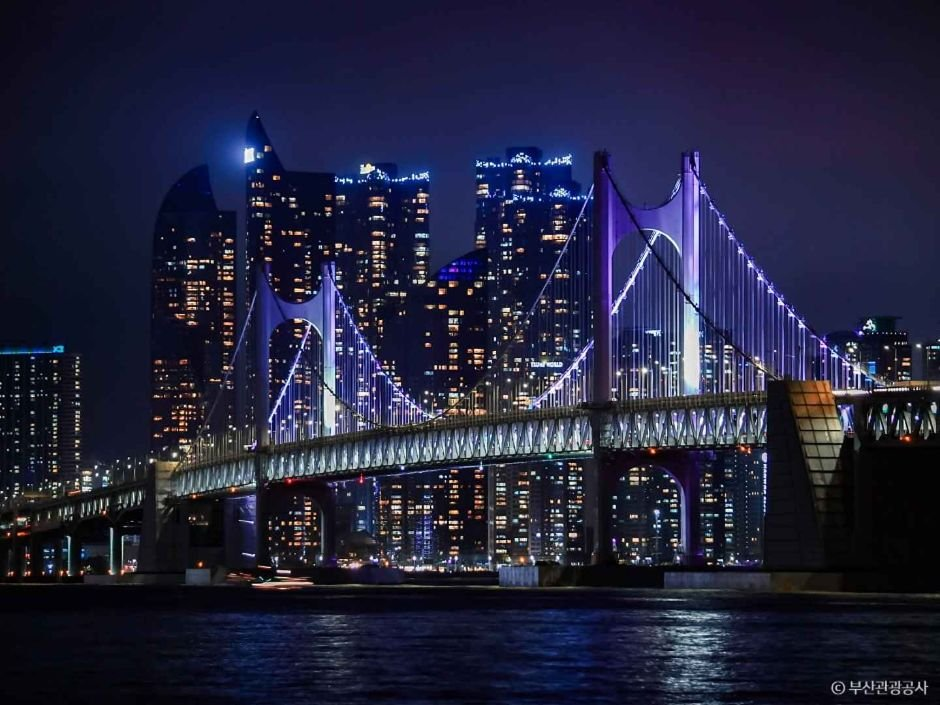
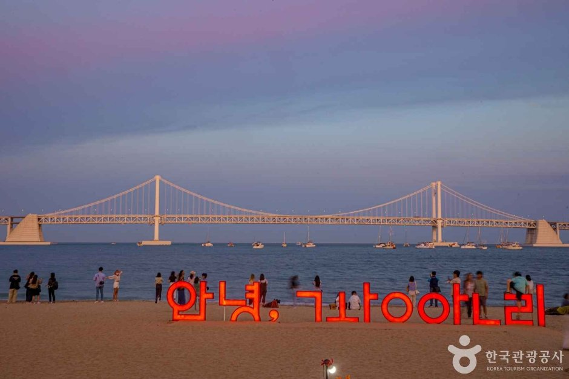
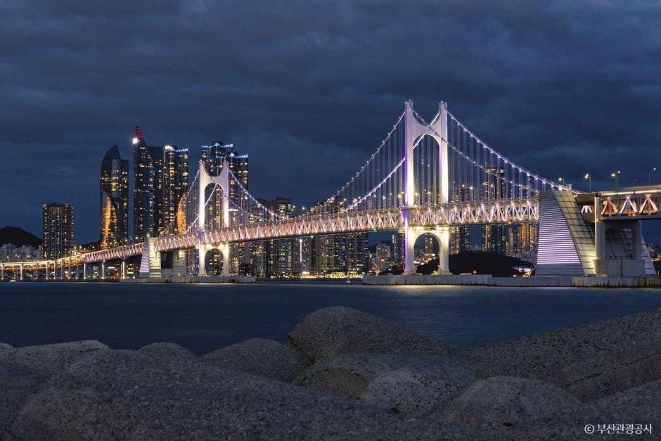

Busan's Beach With a Bridge View
Gwangalli Beach (광안리해수욕장) is at 219 Gwanganhaebyeon-ro, Suyeong-gu, Busan. It's one of the city's best-known beaches, with clear blue water, fine sand and the long Gwangan Bridge across the bay. It's open all the time, and there's no admission fee.
The beachfront is lined with cafés and restaurants, so you can spend a whole afternoon here and stay for the night view. In summer, you can swim, surf and paddleboard. Check rental and safety rules on site.


Gwangan Bridge After Dark
Gwangan Bridge is about 7.4 km long and is known as Korea's largest double-deck bridge over the sea. It links the Namcheon-dong area of Suyeong-gu with the Centum City area of Haeundae-gu.
At night, its lighting system changes colors by day of the week and season. That's why the bridge view is the main reason people come back after sunset.


Saturday Night: Gwangalli M Drone Light Show
On Saturday evenings, the Gwangalli M (Marvelous) Drone Light Show runs over the beach. The "M" stands for Marvelous. The regular show uses about 1,100 drones, and special shows at events like the countdown, Seollal and Chuseok can use up to about 3,000. It's free, there are no assigned seats, and you can watch from anywhere on the beach.
| Attribute | Gwangalli M Drone Light Show |
|---|---|
| When | Every Saturday evening, 2 shows (scheduled Jan 1 – Dec 31, 2026) |
| Winter Times (Oct–Feb) | 19:00 and 21:00 |
| Summer Times (Mar–Sep) | 20:00 and 22:00 |
| Length | About 12 minutes |
| Admission | Free |
| Inquiries | Suyeong-gu Office +82-51-610-6518 |
Weather can change or cancel a show. Check the schedule on the day, and arrive early on busy weekends to get a good spot facing the bridge.


Visitor Information
| Attribute | Gwangalli Beach |
|---|---|
| Address | 219 Gwanganhaebyeon-ro, Suyeong-gu, Busan |
| Hours | Open all the time |
| Admission | Free |
| Parking | Available at the beach (not on Gwangan Bridge). Check fees and peak times before you go |
| Getting There | Busan Metro Line 2: Gwangan or Geumnyeonsan Station, then walk to the beach |
| Phone | Gwangalli Beach +82-51-622-4251 |
| Book Your Trip | 🏨 Busan Hotels & KTX on Trip.com |
Local tip: The sea breeze can get chilly at night, even in early autumn. Bring a light jacket and comfortable shoes for the beach walk.
Source: Korea Tourism Organization (한국관광공사). Photos © Korea Tourism Organization / Busan Tourism Organization. Schedules and details may change; check before visiting.
Book Your Korea Trip
Packable Windbreaker Jacket
A light layer for the cool sea breeze while you wait for the bridge lights and drone show